Pour fixer les idées, il est indispensable de donner une définition précise d'une fraction continue.
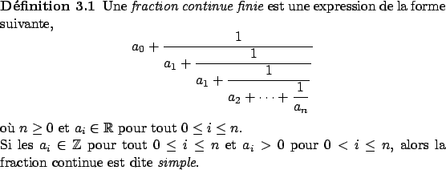
On peut encore écrire cette expression sous la forme plus compacte 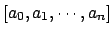. Les nombres réels 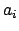 sont appelés quotients partiels de la fraction continue et les nombres 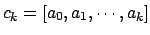 avec 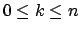 sont appelés convergents de la fraction continue.
Nous savons maintenant ce qu'est une fraction continue, il est clair que l'intérêt de ces objets mathématiques resterait vraiment limité si les expressions du type donné ci-dessus n'apparaissaient que rarement dans la nature. En fait, nous allons voir qu'il est possible d'écrire tout nombre rationnel sous la forme d'une fraction continue. Quelle est la procédure à suivre pour se rendre compte de ce fait, allons-nous devoir utiliser une méthode lourde et compliquée issue de développements récents en théorie des nombres ?
La réponse à cette question est non, et en fait l'algorithme d'Euclide (300 ACN) est la procédure à utiliser, de plus cette méthode va nous permettre de trouver une écriture sous forme de fraction continue simple du nombre rationnel. Comme un exemple vaut parfois mieux qu'un long discours, voici l'écriture du nombre rationnel 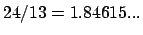.
Utilisons l'algorithme d'Euclide avec les nombres 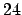 et 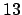, on obtient successivement les égalités suivantes,
Remarquons alors que l'écriture traditionnelle, en base 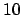, du nombre 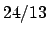 est un nombre décimal illimité périodique, or, puisque l'algorithme d'Euclide fonctionne pour tout entier et se termine toujours, il n'est pas difficile de se rendre compte que les fractions continues nous donnent le moyen d'écrire tout nombre rationnel sous une forme qui est limitée.
A ce niveau de notre exposé, nous sommes capables de donner un algorithme efficace permettant de déterminer l'écriture sous forme de fraction continue simple de tout nombre rationnel.
La fonction 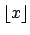 ( 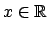) est le plus grand entier inférieur ou égal à 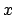. L'algorithme ci-dessus résulte simplement d'une reformulation de l'algorithme d'Euclide.